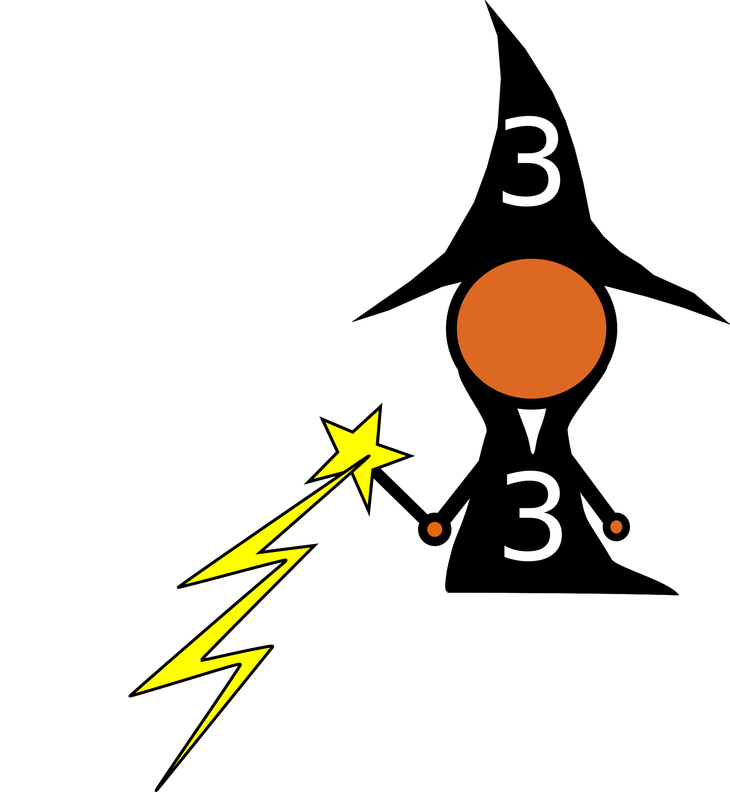
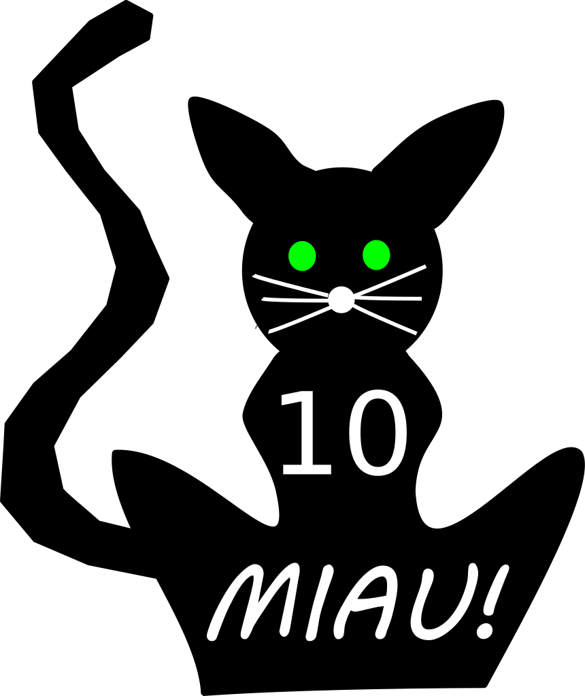
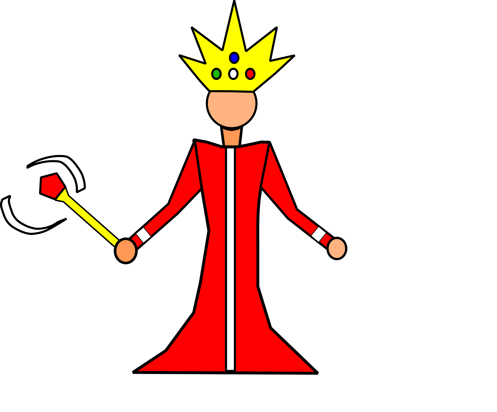
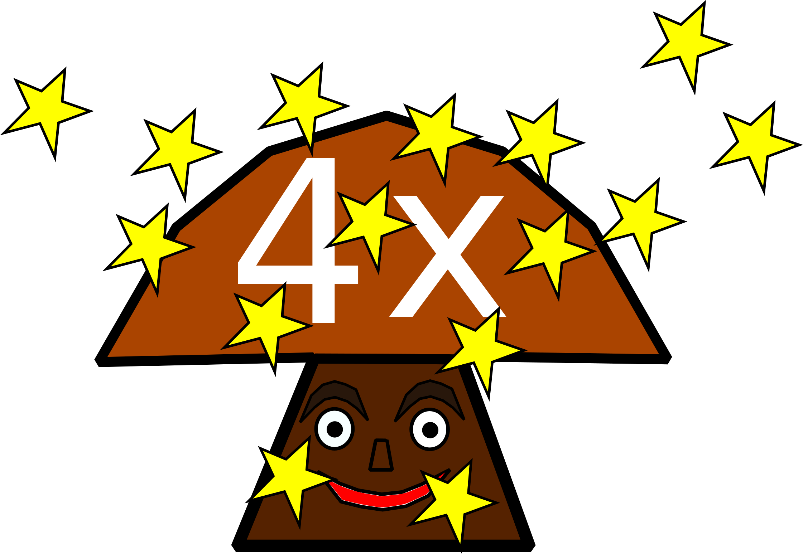

1. Grundprinzip:
Grundlage für die "Bodensee-Mau-Mau" Regeln sind die normalen "Mau-Mau" Regeln. Das heißt, man kann gleiche Farbe auf gleiche Farbe und gleiche Zahl auf gleiche Zahl legen (z.B. Dame auf Dame, 4 auf 4).Legt ein Spieler seine letzte Karte ab, so sagt er "Mau-Mau". Anschließend muss er noch "Matt" sagen, sobald es keine Möglichkeit mehr gibt, dass dieser Spieler doch wieder Karten erhält.
Beispiel:
Legt Spieler A seine letzte Karte, eine 7, auf den Stapel, sagt er zunächst nur "Mau-Mau", da es sein kann, dass er 4 Karten ziehen muss, wenn der Spieler, der nach ihm an der Reihe ist eine 7 spielt.Es gibt auch noch andere Situationen, bei denen es zu einem ähnlichen Fall kommen kann, insbesondere bei den Karten 5 oder 6 (Mehr dazu später).
Das Spiel ist beendet, sobald sich nur noch zwei Spieler mit Karten im Spiel befinden.
Wird mit mehr als drei Personen gespielt, so gibt es mehrere Gewinner, d.h. alle die keine Karten mehr haben. Jedes Spiel hat daher zwei Verlierer.
2. Spielvorbereitung:
Es wird mit einem Romme/Canasta-Deck gespielt (2 x 52 Karten).Ein Spieler beginnt mit dem Austeilen und gibt jedem Spieler 5 Karten. Haben alle Spieler ihre Karten auf der Hand, so deckt der austeilende Spieler die erste Karte vom Stapel auf. Diese wird so gewertet, als hätte sie der austeilende Spieler selbst gelegt. Gespielt wird zu Beginn im Uhrzeigersinn.
3. Kartenregeln:
- Ass:
- Legt ein Spieler ein Ass, so darf er nochmal eine passende Karte darauf ablegen.
- Spielkarte 2:
- Die 2 hat keine besondere Wirkung. Sie wird jedoch in einem Spezialfall, der weiter unten erklärt wird, benötigt.
- Spielkarte 3: 
- Die 3 kann immer gespielt werden, auch wenn der Spieler
der sie spielt selbst nicht am Zug ist.
Sie zählt nicht als Zug, d.h. wenn ein Spieler an der Reihe ist und eine 3 legt, muss er dennoch seinen Zug spielen.
Legt ein Spieler eine 3, so wird die Wirkung der darunterliegenden Karte aufgehoben. Legt ein Spieler beispielsweise eine 7, so kann er die Wirkung der 7 (zwei Karten ziehen) durch die 3 aufheben. Für den folgenden Zug ist dann die unter der aufgehobenen Karte liegende Karte maßgeblich. Liegt unter der aufgehobenen 7 beispielsweise eine Pik 5, so muss der Spieler, der als nächstes dran ist, eine Pik Karte, eine 5, oder eine andere erlaubte Karte spielen.
Legt ein Spieler eine 3 auf eine bereits gespielte 3, so wird die Wirkung der bereits gespielten 3 aufgehoben und Wirkung der Karte die unter dieser 3 liegt, erlangt ihre Wirkung wieder zurück.
Eine 3 kann immer gespielt werden, außer mit der Ausführung der Wirkung der unter der 3 liegenden Karte wurde bereits begonnen. - Spielkarte 4:
- Die 4 hat keinerlei Wirkung.
Es gibt eine andere Variante, in der die 4 eine Wirkung besitzt. - Spielkarte 5:
- Wird eine 5 gelegt, so müssen alle Spieler so schnell wie
möglich die linke Hand aufeinander
auf den Tisch legen.
Derjenige, der die 5 gespielt hat, darf seine Hand nicht als Erster auf den Tisch legen. Wer seine Hand zuletzt auf den Tisch gelegt hat, muss eine Strafkarte ziehen.
Wer die rechte Hand hingelegt hat, muss zwei Strafkarten ziehen.
Treten beide Fälle ein (Letzter + rechte Hand), muss der entsprechende Spieler 3 Karten ziehen. - Spielkarte 6:
- Die 6 hat die gleiche Wirkung wie die 5, nur betrifft sie die rechten Hand (also Strafkarte bei Gebrauch der linken Hand).
- Spielkarte 7:
- Legt in Spieler eine 7, muss der Spieler der als nächstes
an der Reihe ist 2 Karten ziehen. Hat auch
dieser Spieler eine 7, so kann er die 7 "weitergeben". Der erste Spieler der
an der Reihe ist und keine 7 mehr hat, zieht dann
für jede 7 auf dem Stapel 2 Karten und darf danach keine Karte mehr legen.
Danach geht es mit dem nächsten Spieler weiter. - Spielkarte 8:
- Legt ein Spieler eine 8, muss der Spieler nach ihm aussetzen, außer dieser hat auch eine 8. In diesem Fall muss dann der Spieler, der nach diesem Spieler dran ist aussetzen ("weitergeben Effekt" wie bei der 7) usw.
- Spielkarte 9:
- Wird eine 9 gelegt, so darf ein beliebiger anderer Spieler (der nicht an der Reihe sein muss) eine Karte seiner Wahl, die auf die 9 passt, sofort hinlegen. Dieses "Reinwerfen" zählt als Zug, so dass dann der Spieler neben dem Spieler der die 9 gelegt hat als nächstes an der Reihe ist.
- Spielkarte 10: 
- Legt ein Spieler eine 10, so muss dieser sofort "Miau" sagen.
Man kann beliebig viele 10er gleichzeitig legen. Entsprechend muss dann für jede 10 ein "Miau" gesagt werden.
Vergisst ein Spieler "Miau" zu sagen, muss er eine Strafkarte ziehen. Es ist dann zu spät zum "Miau" sagen, wenn der nächste Spieler bereits mit seinem Zug begonnen hat. - Spielkarte Bube:
- Der Spieler, der diese Karte spielt, darf sich eine Farbe wünschen.
Diese Karte kann auf alle Karten außer auf die 7 und auf die 8 gelegt werden, außer deren Wirkungen wurden bereits durch die eine 3 aufgehoben. - Spielkarte Dame:
- Der Spieler, der diese Karte legt, muss seine Karten mit den Karten eines beliebigen Mitspielers tauschen.
- Spielkarte König: 
- Wird diese Karte gelegt, so wird die Spielrichtung gewechselt.
- Spielkarte Joker:

- Hat ein Spieler einen Joker auf der Hand, so kann er diesen zu jeder Zeit vor
sich hinlegen (Nicht auf den Ablagestapel). Hat er aktuell die
meisten Joker vor sich liegen, so hat er das "Reinwerfprivileg".
Das bedeutet, dass er jederzeit eine beliebige, passende Karte auf den Ablagestapel werfen darf. Hat der Spieler eine Karte rein geworfen, so muss er warten, bis er wieder am Zug ist, um dann wieder eine passende Karte rein werfen zu können. Es kann immer nur ein Spieler das "Reinwerfprivileg" haben.
Haben also mehrere Spieler gleich viele Joker vor sich liegen, so erhält derjenige das "Reinwerfprivileg", der seinen Joker als letztes abgelegt hat.
Das Reinwerfen zählt auch hier als Zug, so dass dann der Spieler neben demjenigen, der rein geworfen hat an der Reihe ist.
Muss ein Spieler der einen Joker vor sich liegen hat eine Karte ziehen (sei es, weil er nicht spielen kann oder weil er Strafkarten aufnehmen muss), so muss er pro gezogene Karteeinen vor sich liegenden Joker auf den Ablagestapel ablegen, so dass dann eventuell ein anderer Spieler das "Reinwerfprivileg" erhält.
4. Strafkarten:
- Vergisst ein Spieler, "Mau", "Mau-Mau", "Miau", oder "Matt" zu sagen, muss eine Strafkarte ziehen. Zu spät für diese Worte ist es ab dem Zeitpunkt, ab dem der Spieler der als nächstes an der Reihe ist seinen Zug begonnen hat.
- Wird auf eine 9 eine nicht passende Karte geworfen, so muss eine Strafkarte gezogen werden.
- Wirft ein Spieler mit dem "Reinwerfprivileg" eine falsche Karte rein, so muss er eine Strafkarte ziehen.
5. Besondere Spielsituationen:
-
Ist die vom Austeiler aufgedeckte Karte eine 3, so ist der Ablagestapel leer.
Dies ist auch der Fall, wenn die Wirkung der ersten Karte von einem anderen Spieler durch eine 3 aufgehoben wird.
In diesem Fall muss ein beliebiger Spieler zunächst eine 2 legen, bevor das Spiel fortgesetzt werden kann. -

Liegen 4 gleiche Karten (von der Zahl her) aufeinander auf dem Ablagestapel, so
erhält der Spieler, der die 4. Karte gelegt hat einen "Pilz".
Dieser Spieler kann diesen "Pilz" einsetzen, um einen anderen Spieler, der bereits ein Gewinner ist, wieder ins Spiel zurückzuholen. Dieser Spieler ist dann kein Gewinner mehr sondern nur noch ein "stiller Gewinner".
Das bedeutet, dass er ab sofort wieder am Spiel teilnimmt, obwohl er keine Karten mehr auf der Hand hat.
Er muss auch nicht ziehen d.h. er wird, wenn er an der Reihe ist übersprungen. Sobald ein "stiller Gewinner" wieder zu einer Karte kommt, sei es durch eine Strafkarte, oder weil ein anderer Spieler seine Karten mit denen des "stiller Gewinner" getauscht hat, nimmt dieser Spieler wieder wie die restlichen Spieler am Spiel teil.
Ein Spieler kann seine Karten mit den nicht vorhanden Karten eines "stiller Gewinner" z.B. durch die Wirkung einer Dame tauschen. Dadurch hat dieser Spieler selbst keine Karten mehr und wird zum (richtigen) Gewinner, sobald er "Mau-Mau" → "Matt" gesagt hat.
Pro Spiel kann es maximal zwei Pilze geben.
Ein Spieler (Gewinner) der nicht mehr im Spiel ist, kann keinen Pilz anwenden. -
Hat sich die Kartenzahl eines Spielers nach irgendeinem Vorkommnis auf
eine Karte erhöht oder reduziert, so muss dieser "Mau" sagen.
Vergisst er dies, muss er eine Strafkarte ziehen.
Dieser Fall tritt z.B. auch dann ein, wenn ein Spieler seine Karten mit einem Spieler, der nur noch eine Karte hat, getauscht hat. - Wird eine 6 auf eine 5 gelegt (oder anders herum), müssen alle Spieler beide Hände aufeinander auf den Tisch legen. Der Spieler, dessen Hände die letzten sind, muss zwei Strafkarten ziehen, andernfalls eine Strafkarte.
6. Rangfolgeregeln:
In manchen Situationen kommt es vor, dass ein Spieler gleichzeitig "Mau", "Miau", "Mau-Mau" oder "Matt" sagen müsste. Für diese Situationen gibt es folgende Rangfolge, nach welcher die Worte gesagt werden müssen:"Mau" → "Miau" → "Mau-Mau" → "Matt"
Beispiel:
Hat ein Spieler als letzte Karte eine 10 und legt diese ab, so muss dieser zuerst "Miau" für die 10, dann "Mau-Mau" und dann "Matt" sagen.Spezialfälle:
-
Hat ein Spieler zwei 10ner auf der Hand, so kann er diese nach der Regel
für die Karte 10 gleichzeitig legen. Von den beiden 10ern ist
allerdings eine 10 die letzte Karte. Nun gilt folgende Rangfolge:
-
Nach Ablegen der ersten 10 muss "Mau" und "Miau" gesagt
werden. (Da letzte Karte und eine 10, aber "Mau" steht in der Rangfolge vor "Miau").
Nach dem Ablegen der zweiten 10 muss
"Miau", "Mau-Mau", "Matt" gesagt werden.
"Mau" → "Miau" → "Miau" → "Mau-Mau" → "Matt"
-
Nach Ablegen der ersten 10 muss "Mau" und "Miau" gesagt
werden. (Da letzte Karte und eine 10, aber "Mau" steht in der Rangfolge vor "Miau").
Nach dem Ablegen der zweiten 10 muss
"Miau", "Mau-Mau", "Matt" gesagt werden.
-
Beendet ein Spieler das Spiel mit drei 10ern auf einmal, wäre diese Reihenfolge korrekt:
"Miau" → "Mau" → "Miau" → "Miau" → "Mau-Mau" → "Matt"
usw.
7. Weiter wichtige Punkte:
- Ein Spieler ist unter den Gewinnern, wenn er sein Spiel erfolgreich mit "Matt" beenden konnte.
- Gewinner können und dürfen nicht mehr am Spielgeschehen teilnehmen.
- Ein Gewinner kann zu einem stillen Gewinnern werden. (Siehe Besondere Spielsituationen: Pilz).
Ein stiller Gewinner hat keine Karten, nimmt aber aber am Spielgeschehen teil.
Er muss: -
- Bei den auszuführenden Aktionen der Karten 5 und 6 mitmachen.
- Bei einer 7 zwei Karten ziehen.
- Seine (in diesem Fall nicht vorhandenen) Karten mit den Karten eines andren Spielers tauschen, wenn dieser eine Dame spielt und er von diesem als Tauschpartner ausgewählt wird.
- Ein Spieler der nicht spielen kann, muss eine Karte ziehen. Danach darf er noch eine beliebige, passende Karte spielen (Ausnahmen siehe Spielkarte 7 und Spielkarte 8).
- Ist der Kartenstapel aufgebraucht, so wird der Ablagestapel ohne die oberste Karte zu einem neuen Kartenstapel gemischt.